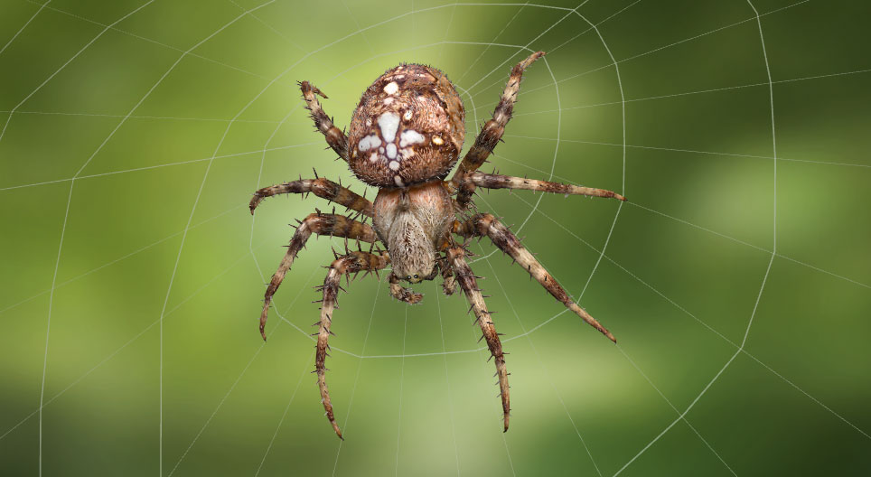

A pókok az ízeltlábúak közé sorolt pókszabásúak osztályának egyik rendje. Két testtájuk, nyolc lábuk és csáprágójuk van. Ragadozók. A jelenleg ismert mintegy 40 000 pókfajt 3 alrend 111 családjába sorolják.
A pókok mérete széles skálán mozog. A legkisebbek a Micryphantinae család tagjai, hosszuk alig éri el az 1 mm-t. A legnagyobbak és legnehezebbek a madárpókok. Hosszuk a 11-13 centimétert, lábaik fesztávolsága pedig a 28-29 centimétert is elérheti.
